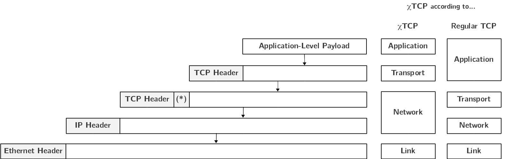

The chiTCP Architecture¶
When using chiTCP in place of the operating system’s TCP/IP stack, applications
use chisocket functions to perform standard socket operations, like
connect, send, recv, etc. Instead of including the socket.h
system header, a chiTCP header must be included:
#include "chitcp/socket.h"
The functions provided by the chisocket library are the same as the ones in the
standard socket library, except they are prefixed with chisocket_. They
provide essentially the same functionality, although they do not support every
possible flag and error code. However, this is enough to write simple clients
and servers. For example:
clientSocket = chisocket_socket(PF_INET, // Family: IPv4
SOCK_STREAM, // Type: Full-duplex stream (reliable)
IPPROTO_TCP); // Protocol: TCP;
chitcp_addr_construct(host, port, &serverAddr);
chisocket_connect(clientSocket, (struct sockaddr *) &serverAddr, sizeof(struct sockaddr_in));
chisocket_send(clientSocket, "Hello!", 6, 0);
chisocket_close(clientSocket);
For a host to be able to use chiTCP or, more specifically, to be able to write
servers and clients based on the chisocket library instead of the regular
socket library, that host must run a chiTCP daemon (called chitcpd). This
daemon is where your implementation of TCP will reside, with the chisocket
library performing the standard socket operations (connect, send, recv, etc.)
through the chiTCP daemon, instead of accessing the operating system’s TCP/IP
stack directly.
The figure above summarizes the chiTCP architecture. Applications that want to use chiTCP call the socket functions in the chisocket library, which communicates with the chiTCP daemon. This daemon includes three important components:
The chisocket Handlers: This contains the implementation of the socket layer, and is the interface between an application and your TCP implementation.
The TCP Implementation (file
tcp.c, described in more detail in the Implementation Guide). This is the part of the code you will be working on.The chiTCP Network Layer: This part of the daemon is responsible for getting your TCP packet from one chiTCP daemon to another, the same way that, when using your operating system’s TCP/IP stack, IP is responsible for getting your TCP packet from your host to another host.
The chiTCP Network Layer is actually just regular TCP (i.e., the operating system’s TCP, not the one you are implementing). So, when chiTCP needs to get one of your TCP packets to another host, it does so by establishing a (real) TCP connection to that other host’s chiTCP daemon on port 23300. THe diagram below shows the packet encapsulation that happens in chiTCP . Notice how, from chiTCP’s perspective, (real) TCP is essentially the Network layer of the protocol stack, while your implementation of TCP is the Transport layer. If we looked at this from a standard TCP/IP perspective, your TCP would simply be the payload of a (real) TCP packet.
(*) chiTCP inserts a special header between the two TCP headers that contains chiTCP-specific information.